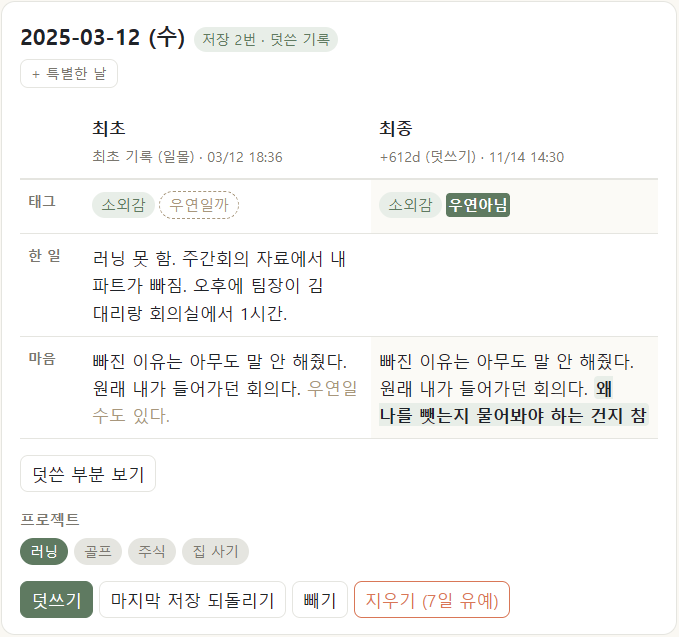
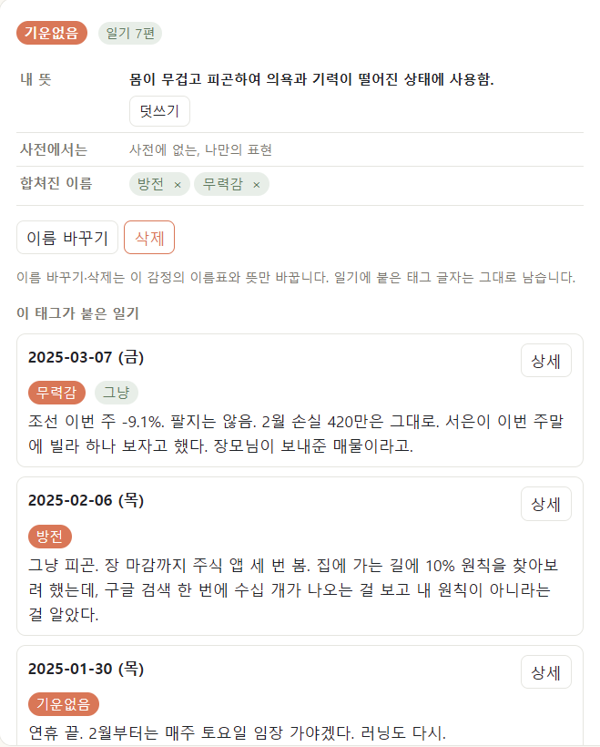
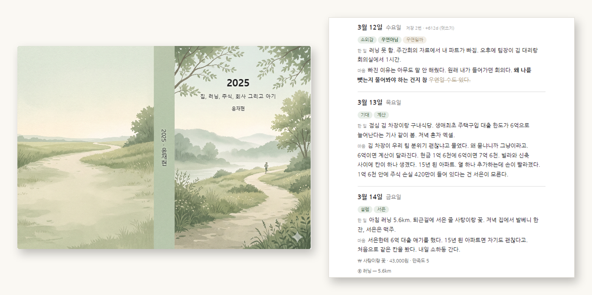

덧쓰기
최초는 그대로, 오늘의 나를 더합니다.
일기를 고치면 거짓 같나요? Texture는 기록을 고치지 않습니다. 다시 쓴 나의 감상만 진하게 쌓여, 인식의 발전이 보입니다.
문자메시지, 카톡, 자동 알림, AI Slop의 홍수 속에서 나는 없습니다.
내가 읽고 쓰는 나를 마주보기 위해 만들었습니다.
감정에 나의 단어로 이름을 붙이고, 책으로 남기세요.
구글 계정으로 시작합니다. 일기는 내 구글 드라이브에 저장됩니다.
덧쓰기
일기를 고치면 거짓 같나요? Texture는 기록을 고치지 않습니다. 다시 쓴 나의 감상만 진하게 쌓여, 인식의 발전이 보입니다.

나의 감정
조급, 조급함, 초조… 그때그때 붙인 태그를 사전 뜻과 나란히 놓고 정리합니다. AI를 통해 혼잡한 감정의 편린을 정제합니다. 일기가 모이고, 기간(주 · 월 · 년) 단위로 이어 읽을 수 있습니다.

책으로
하루 한 장에 나의 인식의 변화를 나란히 싣고, 같은 날짜를 10년 동안 한 장에 모읍니다. 인쇄용 PDF와 EPUB까지 만들어 드립니다.

앱이 가르치거나 처방하지 않습니다. 하루를 담백하게 남기고, 시간을 두고 다시 고쳐 씁니다.
오늘 겪은 일, 머문 곳, 한 일을 꾸밈없이 사실대로.
그 안에서 올라온 기대와 실망, 안도와 피로를 날것 그대로.
그날의 감정을 #무력감처럼 한 단어로. 나중에 언제든 다시 정의합니다.
한 달 뒤 다시 읽고 한 줄로 요약하고, 다른 말로 옮겨 봅니다. 감정과 거리가 생깁니다.
내가 정한 하루, 일 년 동안 쌓인 기록을 스스로 정리하며 답을 찾는 날입니다.